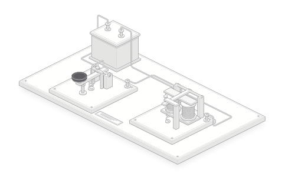

Основание
Дерево или другой изолирующий материал держит стойки и клеммы на месте. Оно должно сохранять форму, чтобы настройка контактов не менялась от перекоса.
Телеграфист нажимает ключ. На другой станции движется металлический якорь: электрическая цепь повторяет ритм руки. По коротким и длинным посылкам принимающий читает текст.
Рассмотреть устройство
Нажимайте на аппарат или кнопку ключа: короткое нажатие — точка, длинное — тире. После паузы буква добавится в конец сообщения; длинная пауза разделяет слова. Доступны латинские буквы A–Z и цифры. На клавиатуре удерживайте пробел или Enter, когда кнопка ключа в фокусе.
Ключ работает как выключатель. Нажатие замыкает цепь батареи, линии и приёмника. Пока контакт удерживается, по цепи идёт ток.
В приёмнике ток проходит через катушки. Их железные сердечники намагничиваются и притягивают якорь. Когда телеграфист отпускает ключ, цепь размыкается, притяжение ослабевает и пружина возвращает якорь. На слух различают моменты притяжения и отпускания. Букву определяет ритм этих движений, включая паузы. [2, 3]
В проводе нет отдельных «точек» и «тире». Это названия короткой и длинной посылок тока. Если удерживать ключ дольше, приёмник дольше остаётся притянутым. Буквы из этой последовательности восстанавливает человек.
Начните с рукояти и проследите путь до приёмника. Нажмите на название узла, чтобы открыть подробности.
Длинный металлический рычаг качается на поперечной оси. Телеграфист нажимает на изолирующую рукоять; передний конец рычага опускается. Длительность нажатия определяет длительность посылки.
Ключ не выбирает букву и не отмеряет тире сам. При ручной передаче человек формирует каждый элемент и каждую паузу. Музейный ключ Морзе — Вейла показывает ранний вариант такого рычажного передатчика. [2]
Под рычагом находятся два контакта: один движется с ним, другой закреплён на основании. Между ними оставляют небольшой зазор. При нажатии контактные поверхности соприкасаются, и цепь замыкается.
Регулировочный винт ограничивает ход рычага. Если зазор слишком велик, руке приходится делать лишнее движение; если слишком мал, случайное касание может дать незапланированную посылку. Контакты должны соприкасаться уверенно и размыкаться после отпускания.
Пружина поднимает рычаг, когда палец перестаёт давить на рукоять. Благодаря ей следующая посылка начинается после отчётливой паузы. В разных ключах пружины располагаются и работают по-разному; здесь показана пружина под передней частью рычага.
Слабый возврат может оставить контакт замкнутым. Излишне сильная пружина утомляет руку. Настройку хода и усилия выбирают вместе: после каждого нажатия рычаг должен возвращаться в одно и то же положение.
Источником тока служит батарея гальванических элементов. Клеммы связывают её с ключом и линией. Изолирующие детали не дают току пройти между выводами в обход рабочего контакта.
Для телеграфии применяли разные элементы. В коллекции Science Museum есть элемент Даниэля, который связывают с опытами Эдварда Дэви 1836–1839 годов. Закрытый блок на рисунке лишь обозначает источник питания: его корпус, число элементов и напряжение не приписаны этому музейному предмету. [5]
Для тока нужен замкнутый путь. В демонстрации его образуют три соединительных провода: от батареи к ключу, от ключа к приёмнику и обратно к батарее. Соединение катушек проходит под основанием приёмника.
Длинная линия добавляет сопротивление и утечки, а её электрические свойства искажают короткие посылки. Поэтому модель короткой цепи не позволяет вычислить дальность реального телеграфа. В системах с реле слабый линейный ток управлял отдельной местной цепью с собственной батареей. [3, 6]
Звуковой приёмник, или клопфер, содержит две катушки с железными сердечниками. При появлении тока электромагнит притягивает металлический якорь, связанный с рычагом. Ограничители задают его рабочие положения, а пружина возвращает механизм после размыкания.
Этот приёмник ничего не печатает. Телеграфист слушает удары механизма и записывает сообщение. В регистрирующем аппарате вместо этого работал узел с бумажной лентой. Развитие от записи на ленте к приёму по звуку описано в материалах Library of Congress. [1, 3, 9]
Названия и геометрия относятся к показанной учебной конструкции. Размеры, сопротивления и усилия не являются характеристиками конкретного исторического аппарата.
Дерево или другой изолирующий материал держит стойки и клеммы на месте. Оно должно сохранять форму, чтобы настройка контактов не менялась от перекоса.
Металлические детали передают движение и выдерживают повторные нажатия. Материал контактных поверхностей и изоляция определяют, где именно замыкается цепь.
Провод катушки изолирован по длине. Иначе ток мог бы проходить между витками коротким путём, и обмотка не работала бы как рассчитанная катушка.
Железный сердечник усиливает магнитное действие катушки. Воздушный зазор и возвратная пружина помогают якорю освободиться после прекращения тока.
За единицу времени принимают точку. Тире длится три единицы. Паузы разделяют элементы, буквы и слова.
| Элемент | Длительность | При точке 160 мс |
|---|---|---|
| Точка | 1 единица | 160 мс |
| Тире | 3 единицы | 480 мс |
| Между элементами буквы | 1 единица | 160 мс |
| Между буквами | 3 единицы | 480 мс |
| Между словами | 7 единиц | 1 120 мс |
Это полные интервалы между посылками. Перед следующей буквой выдерживают три единицы, перед следующим словом — семь. Ещё одну паузу сверху не добавляют. В интерактивном примере эти отношения сохраняются при любой выбранной длительности точки.
Четыре коротких нажатия, межбуквенная пауза, затем ещё два коротких.
Передать HI на аппаратеПроверить источник питания, соединения, возврат рычага и настройку приёмника. Положение коммутационных переключателей зависит от схемы станции.
Вызвать нужную станцию и дождаться ответа. Служебный обмен отделяет начало сеанса от текста; точный порядок зависит от принятого регламента.
Формировать короткие и длинные посылки, оставляя различимые паузы. Ровный ритм помогает принимающему отделять одну букву от другой.
Получить подтверждение, при необходимости повторить непонятое и завершить обмен установленным знаком. Демонстрация выше показывает только передачу выбранного текста. [4]
В мае 1844 года Морзе и Вейл продемонстрировали линию между Вашингтоном и Балтимором. Привычный ручной ключ был частью развития системы, а не её единственной исходной формой. [1, 2]
Ранний передатчик Морзе использовал подготовленные элементы с рельефом, а приёмник отмечал сигналы на бумажной ленте. Ручной ключ упростил отправку. Позже операторы освоили чтение по звуку механизма, и звуковой приёмник позволил принимать сообщения без ленты. [1]
Название «Морзе» объединяет несколько исторических кодов. В США использовали американский вариант, который отличался от международного сочетаниями и ритмом. На этой странице работают международные знаки из современной рекомендации ITU; они не воспроизводят код первой демонстрации. [4, 7]
Батарея скрыта корпусом, внутренние соединения проходят под основаниями. Длина линии сокращена, задержки и искажения сигнала не моделируются. Электромагнитный приёмник реагирует на состояние ключа без расчёта тока, индуктивности и усилия притяжения.
Графическая дорожка под кнопками показывает состояния цепи, а не бумагу, выходящую из приёмника. В автоматическом режиме задан номинальный ритм; реальное движение ручного ключа и приёмника сложнее этой учебной модели.
Музейные предметы, архивные описания и официальный стандарт. Проверено 16 октября 2026 года.
Ранние передатчики, бумажная запись, переход к ключу и приёму на слух.
Ключ 1844 года и участие Альфреда Вейла в развитии аппарата.
Электрические посылки, приёмные устройства и местные цепи с реле.
Знаки, соотношения длительностей и правила обмена. Основа интерактивного примера.
Пример гальванического источника, связанного с ранними опытами телеграфии.
Опыты Джозефа Генри, длинные цепи и принцип управления местной цепью.
Различия американского и международного кода Морзе.
Метод объяснения через устройство физического объекта и стиль технической иллюстрации.
Устройство обычного телеграфного клопфера и отличие от пишущего аппарата.